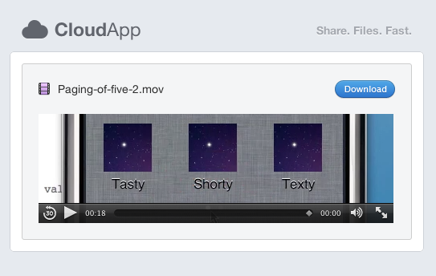

For now this extension will only provide all movie files with a HTML5 compatible preview. A sample is available at cl.ly/aedcc9f418143f307ced.

Enable extensions in Safari 5 and download CloudPreview. Double-click on the file, and Safari will ask you to install this extension.
Once confirmed it should be available inside the extension list, and iTunes should no longer be opend automatically.
There are no settings and no options.
You can download this project in either zip or tar formats.
You can also clone the project with Git by running:
$ git clone git://github.com/tobiastom/CloudPreview.safariextension